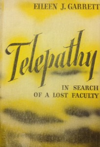

During the spiritualist movement, mediums were pseudo celebrity figures, though many fell into disrespect and anonymity after they were exposed as frauds. Mediums would put on public demonstrations of their abilities, such as spirit rappings and levitation. More exclusive groups would gather in a medium’s home for private or group séances, during which the medium would often produce “ectoplasm,” later revealed to often be regurgitated cheesecloth. Mediums also regularly participated in spirit photography, in which a photography of the medium or other person would reveal an unseen ghostly presence. Sir Arthur Conan Doyle regularly participated in séances, and vociferously defended mediums when many popular figures were revealed to be frauds by psychical researchers such as Harry Price.
From India to the Planet Mars: A Study of A Case of Somnambulism
Theodore Flournoy
New York and London: Harper & Brothers Publishers, 1900
Summary: About the French medium Helene Smith, who claimed to have been a reincarnation of Marie Antoinette and had traveled to Mars through her mind. Reproductions of Smith’s automatic writing, including automatic writing in “Martian.”
Harriet M. Shelton
New York City: The Evans Publishing Company, 1957 [First edition.]
Summary: Harriet M. Shelton claimed to interact daily with the spirits of the dead. She said she spoke with the spirits of people who, having not believed in god in life, were unprepared to move on the in afterlife. She claimed to regularly speak with the spirit of Abraham Lincoln, who supposedly was a leader in the spirit world and wished for her to pass along his message encouraging people to regularly attend church to prepare themselves for the afterlife.
Alice Gilbert
London: The Aquarian Press, 1952 [First edition.]
Summary: A guide to teaching oneself to be telepathic, and “seeing” outside of oneself.
The Hidden Springs: An Enquiry Into Extra-Sensory Perception
Renee Haynes
New York: The Devin-Adair Company, 1961 [First edition.]
Summary: Expresses belief in telepathy, water dowsing, time displacement, and poltergeists. Examines so-called “evidence” for these phenomena.
Telepathy: In Search of a Lost Faculty
Eileen J. Garrett
New York: Creative Age Press Inc, 1945 [First edition.]
Summary: Autobiography of an Irish medium.
Joseph Sinel
London: T. Werner Laurie Limited, 1927 [First edition.]
Summary: Includes chapters on Clairvoyance, telepathy, dreams, spiritualism, hypnotism, and more. “The homing pigeon and the bee are true clairvoyants, and these do not locate and find their homes on a “percentage” of occasions!”
Traill Taylor
London: Whittaker & Co., 1894
Summary: A description of spirit photography along with results of the author’s investigations into the field.


{kind=link}